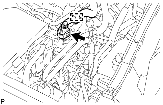

FUEL SYSTEM > ON-VEHICLE INSPECTION |
| 1. CHECK FUEL PUMP OPERATION AND FOR FUEL LEAK |
Connect the intelligent tester to the DLC3.
Turn the engine switch on (IG).
Turn the intelligent tester on.
Enter the following menus: Powertrain / Engine and ECT / Active Test / Control the Fuel Pump / Speed.
Check the fuel pump operation.
Check for pressure in the fuel inlet tube from the fuel line. Check that the sound of fuel flowing in the fuel tank can be heard.
If there is no sound, check the integration relay, fuel pump, ECM and wiring connector.
Inspect for fuel leaks (Click here).
| 2. CHECK FUEL PRESSURE |
Check the battery voltage (Click here).
Discharge the fuel system pressure (Click here).
Disconnect the cable from the negative (-) battery terminal.
| Condition | Waiting Time |
| Vehicle enrolled in G-BOOK system | 6 minutes |
| Vehicle not enrolled in G-BOOK system | 1 minute |
|  |
Disconnect the fuel hose (Click here).
Install SST (pressure gauge) as shown in the illustration.
| *1 | SST (3 Way) |
| *2 | SST (Clip) |
| *3 | SST (Gauge) |
| *4 | Fuel Tube |
| *5 | SST (Hose) |
| *6 | SST (Fuel Tube Connector) |
Wipe off any gasoline.
Reconnect the cable to the negative (-) battery terminal.
Operate the fuel pump.
Connect the intelligent tester to the DLC3.
Turn the engine switch on (IG).
Turn the intelligent tester on.
Enter the following menus: Powertrain / Engine and ECT / Active Test / Control the Fuel Pump / Speed.
Measure the fuel pressure.
Start the engine.
Measure the fuel pressure.
Stop the engine.
Check that the fuel pressure remains as specified for 5 minutes after the engine has stopped.
After checking the fuel pressure, disconnect the cable from the negative (-) battery terminal and carefully remove SST and the fuel tube connector to prevent gasoline from spraying.
Connect the fuel hose (Click here).
Inspect for fuel leaks (Click here).